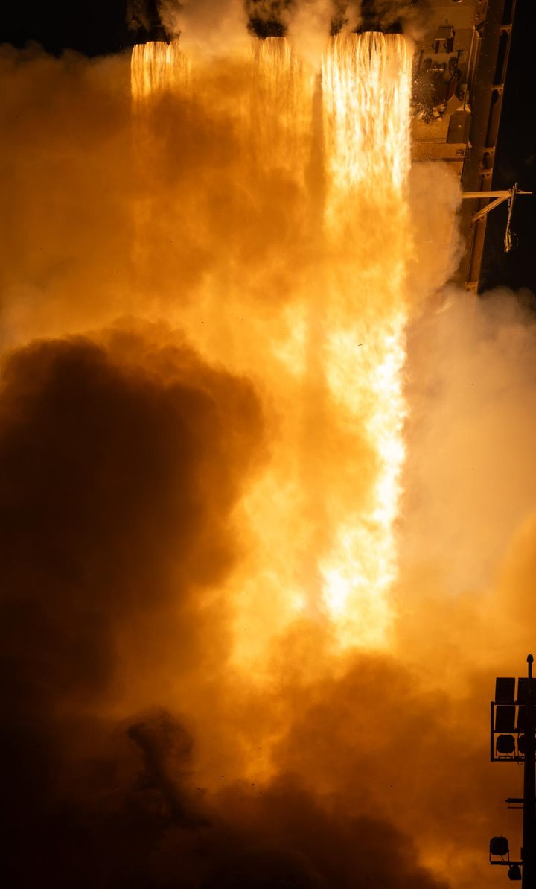

Kaili Cao 曹开力
Astrophysicist · Eric and Wendy Schmidt AI in Science Postdoctoral Fellow, Michigan Institute for Data and AI in Society (MIDAS), University of Michigan
ORCID 0000-0002-1699-6944 · CV (PDF) · Short CV (PDF) · Résumé (PDF, preliminary)
I help build the analysis infrastructure that next-generation sky surveys need, and use it to learn physics.
- AI in science: as a Schmidt AI in Science Fellow, I lead MapHub and hold everything AI helps produce to one standard: it must be checkable.
- Images: I designed Effortless, which reconstructs well-sampled images from the Roman Space Telescope's undersampled exposures 50 to 60 times faster than its predecessor, IMCOM, and led the rewrite of IMCOM itself.
- Cosmology: I forecast what Roman's weak lensing survey can measure about the Universe.
- Stars: I test stellar models against thousands of red giants and made asteroseismic masses of luminous giants more reliable.
- Teams: a member of two Roman Space Telescope teams, for weak lensing cosmology and for asteroseismology.
I think of astronomical surveys as samplings of large parts of the sky, and of time. They let us see the laws that govern the whole Universe, not only the peculiarities of individual objects. In this sense, surveys mark the transition of astronomy from natural history to natural philosophy, just as Tycho Brahe's records of the planets led to Kepler's laws, and then to Newton's law of gravitation.
The next generation of surveys, such as those of the Nancy Grace Roman Space Telescope, will bring great achievements. When future historians look back at the 2020s, I hope they will see that our analysis methods advanced too, not only our instruments. That is why my PhD dissertation at The Ohio State University (2026) is entitled Renovating Analysis Infrastructure for the Next Generation of Astronomical Surveys. It covers two pairs: from stellar interiors to the large-scale structure of the Universe, and from theoretical modeling to data analysis. I mainly see this past work as preparation for my future work, which my Research Directions describes.
About
I am an Eric and Wendy Schmidt AI in Science Postdoctoral Fellow at MIDAS, University of Michigan, and a member of two Roman Space Telescope teams. I came to astrophysics from French literature and computer science, and I have taught programming and mentored students along the way. Under About are my education, teaching and skills, my publications, presentations and software, and a little more about me; my CV is a PDF.
Research
My research covers images, cosmology and stars, and AI in science is the focus of my fellowship. Each area page explains the problem, what I have done, my papers, and what comes next, including an idea I hope to grow. All my papers, with what I contributed to each, are on Publications. Where it all leads over the next five years is my Research Directions. Each area page starts with an introduction for students, and the Glossary explains the terms.
AI in Science
Using physics to improve the data that AI learns from, and making sure that everything AI helps produce can be checked: my research, MapHub, and how I use AI in daily work and teaching.
Images
- Image Reconstruction: Reconstructing well-sampled images with a controlled point spread function from a telescope's undersampled exposures, for the Nancy Grace Roman Space Telescope and beyond.
- Image Analysis: The physical meaning of astronomical images: noise, detector effects and systematics, and images as discrete samples of continuous fields.
- Extragalactic Astronomy: Nearby galaxies, distant galaxies and quasars, and strong gravitational lenses, to which I am glad to contribute my image processing expertise.
Cosmology
- Cosmological Inference: What surveys like Roman's can tell us about the Universe, and how to extract it.
- Cosmological Simulations: Simulations of cosmic structure, and the numerical methods that run them.
Stars
- Stellar Modeling: Testing stellar evolution models against thousands of observed red giant stars.
- Asteroseismology: Stellar oscillations as precise measures of stellar masses and ages, from Kepler to Roman.
Opinions
- Learning Python: notes from the free online Python tutorial I taught (2022–2023), with a Huarongdao solver to play with.
- Python Philosophy: what is still worth understanding about code when AI writes much of it.
- Research Ethics: collaboration, mentoring, data, authorship, peer review, conflicts of interest, and misconduct.
- Teaching Philosophy: how I teach and mentor, and outreach.
- Career Development: notes from my career so far, starting with what I learned applying for postdocs. Advice welcome.
News

- Oct 2026 MapHub, the MIDAS arXiv Preprint Hub, wrote its first daily tables on October 6, and I launched this website on October 11.
- Sep 2026 I joined MIDAS at the University of Michigan as an Eric and Wendy Schmidt AI in Science Postdoctoral Fellow, and the new cohort was welcomed at the MIDAS Postdoc Bootcamp 2026.
- Aug 2026 The Nancy Grace Roman Space Telescope launched on August 30, 2026. Much of my PhD work prepared for its data, and I look forward to seeing its first images.
- Jun 2026 I defended my PhD dissertation, Renovating Analysis Infrastructure for the Next Generation of Astronomical Surveys (defense slides, PDF), at The Ohio State University on June 25.
Contact
Email kailicao@umich.edu · GitHub kailicao. I would be glad to hear from you about any of my work; what I am especially glad to talk about, and how best to reach me, is under Working with me.
Terms on this page (1)
- IMCOM
- Short for IMage COMbination: an image-combination method that chooses the weights of input pixels so that the output image has a PSF as close as possible to a target the user specifies, while keeping the noise under control. PyIMCOM is its modern implementation for Roman, and Effortless is a faster successor.